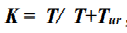
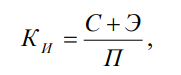
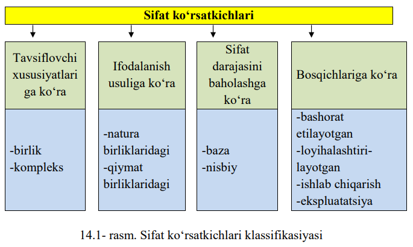

Reja:
14.1. Mahsulot sifati tushunchasi.
14.2. Mahsulot sifatini baholash usullari.
14.3. Sanoat mahsulotlarining tasniflanishi.
Mahsulot sifati – o‘z vazifasi (qo‘llanilishi)ga ko‘ra ma’lum darajada
muayyan ehtiyojni qondirishga yaroqliligini ko‘rsatadigan xossalari majmuasidir
(GOST 15467- 70 bo‘yicha).
Bu ta’rifdan shunday xulosa kelib chiqadiki, mahsulot sifati jamiyat
ehtiyojidan kelib chiqadi. Ba’zi bir mamlakatda sifatli hisoblangan mahsulot boshqa
bir mamlakatda unday mahsulotga ehtiyoj bo‘lmasligi mumkin (milliy traditsiyalar
bo‘yicha) va u shu jamiyat uchun sifatli hisoblanmaydi. Lekin hamma mahsulotlarga
bu misol to‘g’ri kelmaydi. Masalan, sifatli rangli televizorlar, avtomashinalar,
video-, radio texnikalar va h.k.
Mahsulot sifati ishlab chiqarishning texnik darajasiga bog’liq va juda ko‘p
faktorlar bilan aniqlanadi: konstruksiyaning takomilligi, standartlashtirish va
agregatlashtirish darajalari va h.k.
Mahsulot sifatini uning xossalarini son jihatdan xarakterlab, obyektiv
baholash mumkin.
Kvalimetriya mahsulot sifatini aniqlashning nazariy asoslari va son
ko‘rsatkichlarini aniqlash usullarini ishlab chiqish bilan shug’ullanadi.
Kvalimetriyaning asosiy vazifalari quyidagilardan iborat:
-mahsulot sifati miqdoriy ko‘rsatkichlarini baholash usullarini ishlab
chiqish;
-vaqt o‘tishi bo‘yicha mahsulot sifati o‘zgarishini hisobga olish usulini
yaratish;
Mahsulot sifati quyidagi prametrlar bilan xarakterlanadi.
1. Mahsulot sifatining yakka ko‘rsatkichlari: mehnat unumdorligi; tezlik;
yuk ko‘tarish qobiliyati va h.k.
2. Mahsulot sifatining kompleks ko‘rsatkichlari. Bu ko‘rsatkich mahsulot
sifatining bir necha xossalarini xarakterlaydi. Masalan: buyumning tayyorlik
koeffisiyenti (koeffisiyent gotovnosti izdeliya). Bu ko‘rsatkich bir vaqtni ichida
buyum buzilmasdan ishlashi (bezotkaznost) va ta’mirlashga yaroqliligini
(remontoprigodnost) xarakterlaydi:

Bunda: T - buyum buzilguncha (ishlamay qolguncha) ishlash vaqti;
T ur- buyumni tamirlash uchun o‘rtacha sarflangan vaqt.
Mahsulot tovar navi (sorti) kompleks ko‘rsatkich bo‘lib, uning bir qator
xossalarini o‘z ichiga oladi. Masalan, paxtaning tovar navi (sorti) tolaning uzilish
kuchi, tashqi ko‘rinishi, pishiqligi, iflosligi, namligi va boshqa bir qator xossalarini
o‘z ichiga oladi.
Mahsulot sifatini iqtisodiy jihatdan baholaydigan ko‘rsatkich - integral
ko‘rsatkichdir. Integral ko‘rsatkich mahsulotning foydali tomonlarining yig’indisini
uni yaratish, foydalanish va iste’mol qilish uchun sarf bo‘lgan xarajatga nisbati
orqali ifodalanadi:

bunda: К и–sifatning integral (kompleks) ko‘rsatkichi, so‘m/t.km.
С - mashinaning tannarxi (sebestoimost), so‘m,
Э - foydalanish davridagi chiqimlar (ekspluatatsionniye rasxodi), so‘m;
П - mashina probegi (shu muddatda) t.km.
Bu esa mahsulot sifatining rentabelligi, ya’ni sarf qilingan puldan so‘mma
foydani belgilaydi.
Sifatning umumlashtirilgan ko‘rsatkichlari. Bunga alohida-alohida
ko‘rsatkichlar yig’indisi kiradi. Alohida - alohida ko‘rsatkichlar bir xil birliklarga
ega bo‘lishi kerak. Yoxud nisbiy o‘lchamsiz birliklarda bo‘lishi lozim. Bunda
har qaysi ko‘rsatkichning ta’siri koeffisentlarda (ballar bilan) ifodalanadi.
Barcha texnik iqtisodiy ko‘rsatkichlar quyidagi guruhlar bo‘yicha
klassifikasiya qilinadi:
-mahsulot vazifalari bo‘yicha ko‘rsatkichlar;
-ishonchlik ko‘rsatkichlari;
-texnologik jarayonlar bo‘yicha ko‘rsatkichlar;
-ergonomik ko‘rsatkichlar;
-estetik ko‘rsatkichlar;
-standartlashtirish va unifikasiyalashtirish ko‘rsatkichlari;
-patent - huquqiy ko‘rsatkichlar.
Mahsulot vazifalari bo‘yicha ko‘rsatkichlar:
-mehnat unumdorligi;
-energiya iste’mol qilishligi;
-og’irligi (material sarflanganligi) ;
-mashinaning universalligi va h.k.
Mahsulot ishonchliligi ko‘rsatkichlari:
-buzilmasdan ishlashi (bezopasnost);
-ko‘p yeyilmasdan ishlashi (dolgovechnost);
-ta’mirlashning osonligi (remontoprigodnost).
Ergonomik (grekcha ergon- ish va nomes- qonun) ko‘rsatkichlar:
-mashinani boshqarishning qulayligi;
-xavfsiz boshqarish mumkinligi;
-mashinaning gigiyena sifatidan qulayligi;
-psixologik ko‘rsatkichlar;
-fiziologik ko‘rsatkichlar.
Estetik ko‘rsatkichlar:
-mahsulotning tashqi ko‘rinishi;
-mashinaning atrof-muhitga bilan uyg’unligi;
-mashinaning tashqi pardozi.
Mahsulotning bir yoki bir necha xossa xususiyatlarining miqdoriy tavsifiga
sifat ko‘rsatkichi deyiladi. Sifat ko‘rsatkichlarini tanlash – mahsulot sifati tarkibiga
kiruvchi va uning sifati darajasini baholashga imkon beruvchi mahsulot
xususiyatlari miqdoriy tavsifining nomlarini aniqlashdir.
Sifat ko‘rsatkichlarining nomlarini tanlashni asoslab berish quyidagilarni
hisobga olgan holda amalga oshiriladi:
- mahsulotdan foydalanish shartlari va nima maqsadda ishlab
chiqarilganligi;
- iste’molchi talablarining tahlili;
- mahsulot sifatini boshqarish masalalari;
- tavsiflanayotgan xususiyatlarning tarkibi va strukturasi;
- sifat ko‘rsatkichlariga nisbatan qo‘yilgan asosiy talablar (15.1-rasm).
Xalq iste’moli tovarlarining sifatini nazorat qilish sifatining ijtimoiy,
funksional, ishonchlilik, ergonometrik, estetik, ekologik, xavfsizlik kabi iste’mol
ko‘rsatkichlarini o‘rganish zaruriyatini keltirib chiqaradi.
Zarurat tug’ilsa, tovarlarining sifatini baholash va tahlil qilish
iste’molchilarning talablarini ham hisobga olgan holda amalga oshiriladi. Ijtimoiy
ko‘rsatkichlar maxsus ko‘rsatkichlar guruhiga kiradi. Tovarlar sifat ko‘rsatkichlari
va iste’mol xususiyatlariga ko‘ra quyidagicha klassifikasiyalanadi.

| Ko‘rsatkichlar guruhlari | Ko‘rsatkichlar |
|---|---|
| Ijtimoiy mohiyatiga ko‘ra | Tovarlarni ishlab chiqarishi ijtimoiy zaruriyati, tovarning optimal assortimentiga mos kelishi, ma’naviy eskirishi |
| Funksional | Asosiy funksiyasini bajarishining takomillanishi, qo‘llanishda universalligi, yordamchi operatsiyalar bajarishining takomillanishi |
| Ishonchlilik | Uzoq muddat ta’mirlanmasdan ishga yaroqli holda, o‘z tashqi ko‘rinishini yo‘qotmasligi turishi |
| Ergonometrik | Gigiyenik, antropometrik, fiziologik, psixofiziologik va psixologik |
| Ekologik | Tashqi muhitni ifloslantiradigan zararli chiqindilar bo‘lishi |
| Estetik | Ko‘zga tashlanuvchanlik, tashqi tuzilishining ratsional bo‘lishi. Ishlab chiqarishni bajarilishining mukammal bo‘lishi, tovar ko‘rinishining stabilligi |
| Iste’molning xavfsizligi | Himoya moslamalarining ishlab chiqarishda qo‘llanilishidagi samaradorligi |
Sifat ko‘rsatkichlari obyektiv (o‘lchash, hisoblash) va subyektiv
(organaleptiv-xidlash, paypaslab qurish, sotsiologik, ekspert) usullar bilan
aniqlanishi mumkin.
O‘lchash usulida mahsulot sifati o‘lchash vositalari yordamida aniqlanadi:
tarozilar, rasxodomerlar, spidomerlar va h.k.
Hisoblash usuli. Mahsulot sifati bu usulda nazariy va emperik
ko‘rsatkichlarning mahsulot sifat ko‘rsatkichlari bilan bog’lanishi orqali amalga
oshiriladi. Hisoblash usulidan mahsulotning loyihasini tuzishda foydalaniladi.
Mahsulotning sifat ko‘rsatkichlari o‘rtasidagi bog’lanish ham shu usulda
aniqlanadi. Masalan, mashinaning F.I.K. ni topish, 1 km ga sarflangan yoqilg’i,
mehnat unumdorligini aniqlash orqali buyum sifati aniqlanadi.
Qayd qilish usuli. Mahsulotni muntazam ravishda kuzatish, hodisalarini,
buyumlarni va xarajatlarni hisobga olish qayd qilish usulining asosi hisoblanadi.
Masalan, mahsulotning yaroqsizligini aniqlashda undagi nuqsonlarning soni va
hajmi hisobga olinadi. Mashinani vaqti-vaqti bilan buzilishi (ishlamay qolishi)
hisobga olinadi. Mahsulot sifatini boshqarishda mana shunday axborotlarga e’tibor
beriladi.
Sotsiologik usul - iste’molchilarning mahsulot sifatiga bergan baholarini
yig’ish va bildirilgan fikrlarni tahlil qilish asosida uning sifatiga baho berish usulidir.
Bunda iste’molchilarga anketalar tarqatiladi, fikrlari so‘rab olinadi, maxsus
konferensiya, yig’ilishlar, degustasiya, ko‘rgazmalar o‘tkaziladi.
Ekspert usuli. Mahsulotning sifat ko‘rsatkichlari mutaxassis ekspertlarning
qaroriga asosan aniqlanadi. Ko‘pincha mahsulotning sifatini obyektiv usullarda
aniqlash qiyin bo‘lgan taqdirda ekspert usulidan foydalaniladi. Bu usul ko‘pincha
mahsulotning sifati orgonoleptik usulda aniqlanganda kerak bo‘ladi.
Mahsulot sifatini ekspert usulda aniqlashda mutaxassislardan iborat
komissiya tuziladi va ushbu komissiyaning umumiy qarori tasdiqlanadi.
Orgonoleptik usul ko‘pinchalik qishloq xo‘jalik, to‘qimachilik mahsulotlarini
sifatini aniqlashda asosiy usul hisoblanadi. Bu usulda kishining sezgi organlari
o‘lchash asboblari (ko‘rish, ta’m va hid bilish, eshitish, qattiqlikni sezish va
boshqalar) bo‘lib xizmat qiladi.
Orgonoleptik usul oddiy bo‘lib, maxsus asbob-uskunalar talab qilmaydi. Shu
bilan birga uning bir qator kamchiliklari ham bor. Bu usulda mahsulot sifatini
aniqlashda sifat ko‘rsatkichlari nisbiy xarakterga ega bo‘lib, u to‘g’risida to‘liq
malumotga ega bo‘la olmaymiz.
Orgonoleptik usulda mahsulotning sifatini aniqlashda mahsulot partiyasi
ko‘zdan kechiriladi va shundan keyin idishlar ochilib mahsulotning ahvoli,
ko‘rinishi, katta-kichikligi, rangi va tusi, hidi, xushbo‘yligi, ta’mi kabilar
aniqlanadi.
Mahsulotni orgonoleptik baholashda joyning yorug’ligi, mahsulotni
tekshiruvchilar soni va sinovchilarning malakalari kabi omillar katta ta’sir
ko‘rsatadi.
Mahsulotni sifatini orgonoleptik usulda aniqlashda etalonlardan va standart
namunalardan xam foydalaniladi.
Barcha xalq xo‘jaligi mahsulotlari birinchi va ikkinchi sinf (klass)
mahsulotlariga bo‘linadi:
Birinchi sinfga xomashyo, yarimfabrikatlar, materiallar, yonilg’i, oziq-ovqat,
o‘g’it va boshqalar kiradi (bu mahsulotlardan turlicha foydalaniladi).
Ikkinchi sinfga resurslari ishlatiladigan mahsulotlar kiradi: mashina, pribor,
videotexnika va h.k.
Mahsulotlar guruhlar bo‘yicha quyidagilarga bo‘linadi.
1-guruh: Xom ashyo va yoqilg’ilar, rudalar va ularning konsentratlari,
tabiiy qurilish materiallari va h.k.
2-guruh: Moylash materiallari, zagotovkalar, prokatlar, har xil kimyoviy
mahsulotlar, tibbiyot dorilari va h.k.
3-guruh: Atir-upalar, konservalar (bankalarda), ballondagi gazlar va h.k.
4-guruh: Ta’mirlanmaydigan buyumlar: elektrovakuumli va yarim
o‘tkazgichli priborlar, rezistorlar, kondensatorlar, keramik plitalar va h.k.
5-guruh: Ta’mirlanadigan buyumlar (mashinalar, mebel va boshqalar).
Mahsulotlarni sinflar va guruhlarga bo‘lishdan maqsad ularning sifat
ko‘rsatkichlarini aniqlashni hamda standart tuzishni yengillashtiradi.
Takrorlash uchun savollar:
1. Mahsulot sifati nima?
2. Kvalimetriya nima bilan shugʻullanadi?
3. Texnik – iqtisodiy ko‘rsatkichlarning klassifikasiyalanishini aytib bering.
4. Mahsulot sifatini nazorat qilishning qanday usullari bor?
5. Sanoat mahsulotlarining tasniflanishini tushuntirib bering.
6. Mahsulot sifatini nazorat qilishning subyektiv usullarini aytib bering